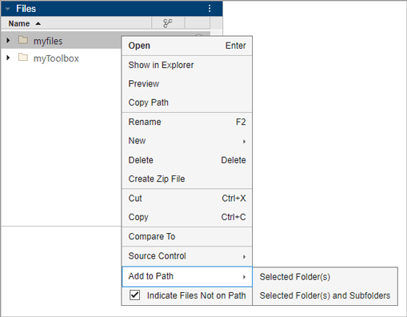
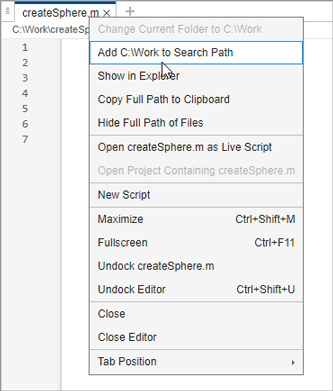

Change Folders on Search Path
You can programmatically and interactively add or remove folders and change the order of MATLAB® folders on the search path, for the current session and future sessions. When files with the same name appear in multiple folders on the search path, MATLAB uses the one in the folder nearest to the top of the search path.
Change Folders Programmatically
You can programmatically add one or more folders on the path using the addpath function. This example adds
the folder to the top of the search path. See addpath for other options.
addpath("c:\matlab\MyFolder")You can remove one or more folders from the path using the rmpath function.
rmpath("c:\matlab\MyFolder")To save changes to the search path across MATLAB sessions, use the savepath function. This function
also saves changes that you make interactively with the Set Path dialog box, from
the Files panel, or in the MATLAB Editor.
In MATLAB
Online™, changes to the path are automatically saved. Therefore, calling
savepath is not necessary.
Change Folders on Search Path Interactively
You can make changes to the search path interactively using the Set Path dialog
box. To open the dialog box, on the Home tab, in the
Environment section, click Set Path.
Alternatively, you can use the pathtool function.

Search for Folder
To search for folders on the path, use the search box at the top of the Set Path dialog box.
Add and Remove Folders
To add folders to the search path, click the Add Folder button at the top of the Set Path dialog box and select either Add Folder to Path or Add Folder with Subfolders. To remove a folder from the search path, right-click the folder in the list and select Remove.
To revert your changes, click the Revert changes button at the top of the Set Path dialog box.
Change Folder Order
To change the order of existing folder on the search path, right-click the folder and select from the available options, including Move up, Move down, Move to top, Move top bottom. Files contained in folders at the top of the search path have precedence over those in folders farther down. For more information, see Function Precedence Order.
To revert your changes, click the Revert changes button at the top of the Set Path dialog box.
Save Changes
To use the newly modified search path only in the current session, click OK. To save the newly modified search path for future sessions as well, select the Save path for future sessions check box, and then click OK.
Note
The MATLAB (userpath) folder
automatically moves to the top of the search path the next time you start
MATLAB. For more information about the
userpath folder, see userpath Folder on the Search Path.
Change Folders From the Files Panel
You can add or remove folders on the search path from the Files panel. Folders that are not on the path appear transparent, while those on the path appear solid.
From the Files panel, right-click the folder or select and then right-click multiple folders to add or remove.
From the context menu, select Add to Path or Remove from Path, and then select an option:
Selected Folder(s)
Selected Folder(s) and Subfolders

Changes to the search path using this method do not persist in future MATLAB sessions. To save these changes, use savepath.
Change Folders on Search Path In MATLAB Editor
In the MATLAB Editor, you also can add or remove the folder that contains a script on the search path. Right-click the document tab, and then select an option to add or remove the folder from the search path.

Changes to the search path using this method do not persist in future MATLAB sessions. To save these changes, use savepath.